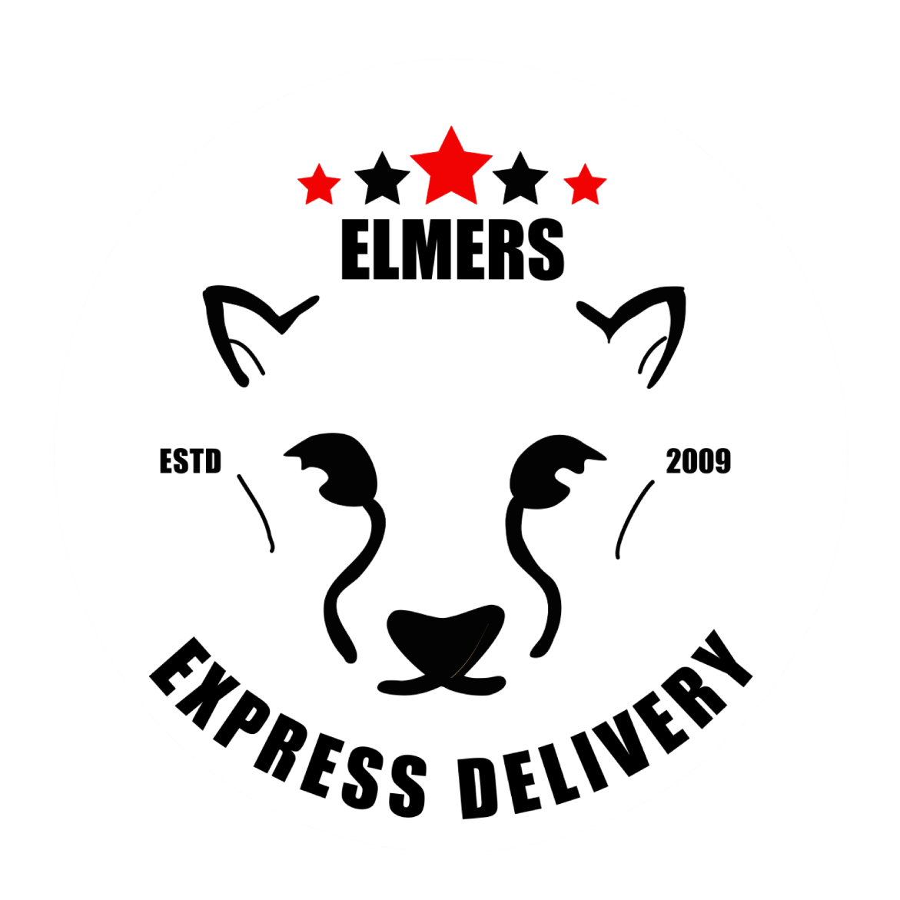

Hi, I'm Alex!
I'm an aspiring Data Scientist,
currently studying at Cascadia
Alexander Rodriguez
USA
WASHINGTON
CASCADIA COLLEGE
I'm Alex, a student at Cascadia College with a strong passion for mathematics and computer science.
I thrive in environments where there are complex problems to solve,
whether they are to be resolved through communicating with others or through code.
Through my experiences in the classroom and the workplace,
I have developed a unique skill set that allows me to effectively
communicate with a diverse group of people.
Whether I am developing a website from scratch,
managing logistics in a warehouse setting,
or even helping others navigate through challenges,
I always implement a caring and detail-oriented approach to my work.
I'm always looking for new opportunities to learn and grow;
I'm excited to see where my journey will take me.
Technical Skills
Experience
Elmer's Express
Moving
Directly involved in assisting customers in moving homes, such as by packaging items and furniture.
Warehousing & Receiving
Managed inventory and handled receiving of furniture in a warehouse setting. Maintained records of incoming shipments and checked inventory.
Customer Service
Scheduling customer quotes and estimates via email and phone.
Website Development
Developed company website from scratch using modern web technologies (NodeJS, HTML, SCSS).